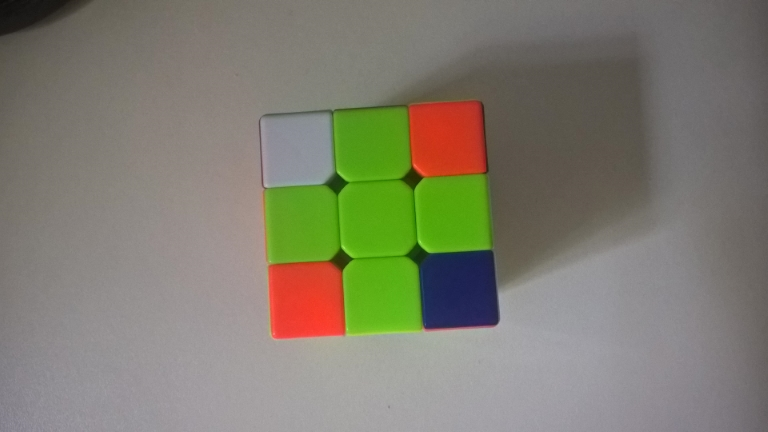
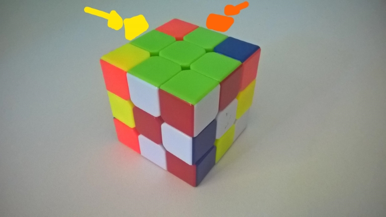
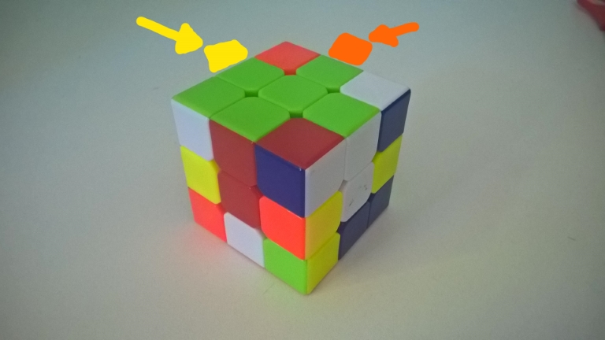
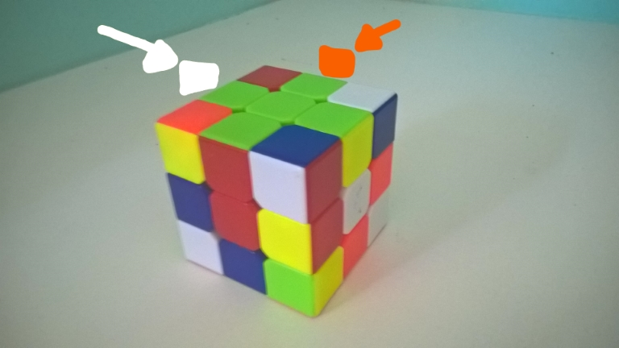
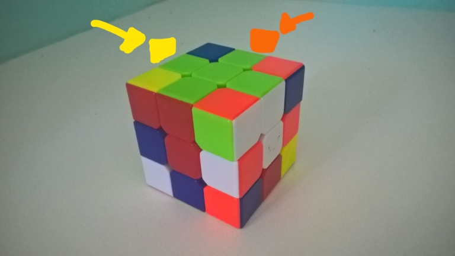
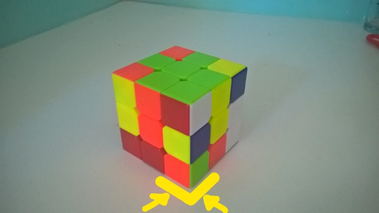
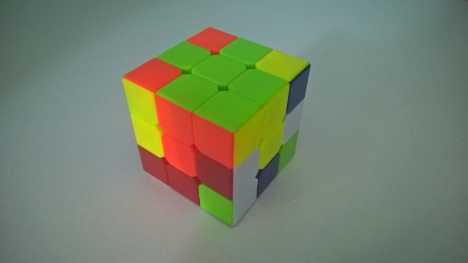
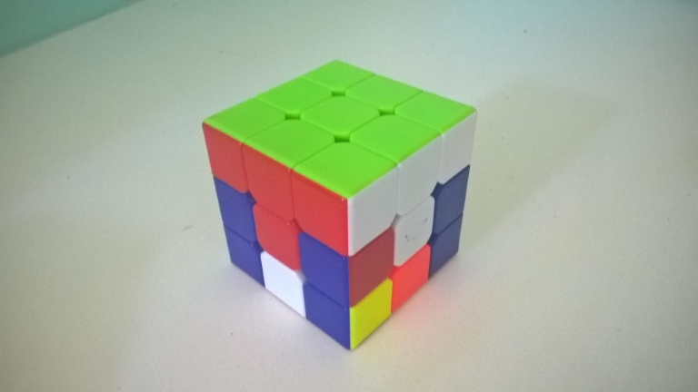

Montando o Rubik's Cube
1 - A Cruz
Não se preocupe com a quinas, apenas com a peças da cruz
Escolha uma cor, qualquer uma; ela será sua base
Agora, faça uma cruz na cor que você escolheu:

2 - Alinhamento da Cruz
Não se preocupe com a quinas, apenas com as peças da cruz
Analise o alinhamento da cruz para com os outros centros, tudo deve estar devidamete alinhado; Gire o topo até achar a
maior
quantidade de alinhamentos possível
Alinhamento Vizinho:
R' U' R U R'

->

Caso duas cores opostas não estejam alinhadas, você vai precisar trocar suas posições
Alinhamento Oposto:
R' U2 R U2 R'

->

3 - Colocando as quinas
Procure uma quina, repare nas três cores; ela deve ser encaixada o mais próximo possível dos centros daquelas três cores
Deixe-a do lado direito de onde ela deve encaixar
Subir Quina:
R' D' R D

->

Obs: Dependendo da orientação da quina, é possível que você tenha de executar o movimento mais de uma vez; execute até a quina ficar no lugar correto (Isso pode levar no máximo 7 movimentos)
Faça o mesmo em todas as outras quinas
Resultado:

Movimentos
----||||----
Meio